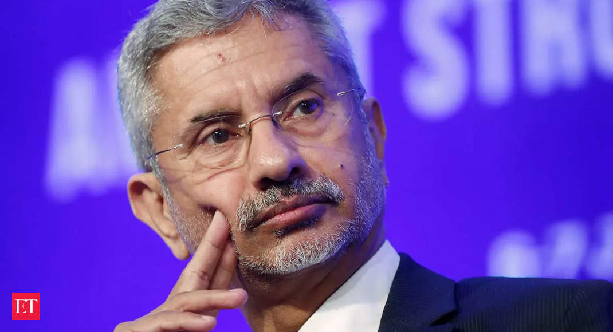

Geopolitical Rebalancing: The Significance of Africa's Rise for India

India's Foreign Minister, S. Jaishankar, recently commented that the rise of Africa is key to geopolitical rebalancing. This statement highlights the growing importance of Africa in the global arena and India's recognition of it as a vital partner. But what lies behind this statement and how is it impacting India's foreign policy?
To understand the significance of Africa's rise for India, we need to delve into history. India and Africa have had a long-standing relationship that dates back centuries. The trade linkages developed during this period provided the foundation for the current partnerships.
However, post-independence in the 1950s and 60s, India's relationship with Africa faced a setback due to the political differences that emerged. India was seen as aligned with the Soviet Union and was perceived as a 'meddling outsider' by some African countries fighting for independence.
India's foreign policy underwent a shift in the 1990s with the end of the Cold War, opening up new avenues for partnerships with Africa. Currently, India is Africa's third-largest trading partner, after China and the European Union. In 2019-20, India-Africa trade was worth around $64 billion.
Examples of India-Africa Collaborations
The Indian government has been actively seeking to strengthen economic and diplomatic ties with Africa. Some case studies of India-Africa partnerships include:
- Pharmacy Sector: India's pharmaceutical industry has been collaborating with African countries to improve healthcare. Indian companies currently supply around 60% of Africa's pharmaceutical needs. Generic cancer drugs, antiretroviral drugs, and vaccines are some of the areas where Indian expertise is provided.
- Agriculture Sector: Indian agricultural firms have been collaborating with African countries to improve productivity and initiate sustainable farming practices. India has been providing technical assistance and training in this area. The agricultural sector is a critical area of collaboration given that agriculture is one of Africa's main sectors, employing more than 60% of the population as per the African Development Bank.
The Significance of Africa's Rise for India - A Closer Look
The rise of Africa has various implications for India. Some of the reasons why Africa's growth is critical are:
- Economic Opportunities: Africa is of strategic importance to India given that it presents immense economic opportunities. As per the IMF, Africa's growth is expected to be around 3.4% in 2021, providing India with more scope for economic growth and investment. It is also a vast market for Indian exports and Indian companies seeking to expand their operations outside the country.
- Diplomatic Leverage: Africa's increasing importance in the global South provides India with an opportunity to strengthen its diplomatic relations with countries in the African Union and leverage its position on global issues affecting developing nations. Africa is of greater importance for India, considering the emergence of other regional powers like China, Russia, and the United States.
- Soft Power: India's relations with Africa can be seen as a part of its soft power strategy. India's soft power is seen as its ability to influence other countries' perceptions through culture, language, and values. India's historical and cultural connections with Africa and its past struggles for independence from colonial powers provide it with a unique advantage in this area, strengthening the relationship between the countries.
Conclusion
The rise of Africa is key to geopolitical rebalancing, and this statement holds particularly true for India. India has a lot to gain from Africa's growth, including significant economic opportunities, stronger diplomatic relations, and increased soft power. A stronger India-Africa partnership is the need of the hour, given the changing global order, and has the potential to pave the way for a more equitable future.
References:
- https://economictimes.indiatimes.com/news/economy/foreign-trade/s-jaishankar-for-india-rise-of-africa-is-key-to-geopolitical-rebalancing/articleshow/82979827.cms
- https://www.businesstoday.in/current/economy-politics/india-can-be-doctors-and-pharmacists-for-africa-prabhu/story/312415.html
- https://www.thehindu.com/opinion/lead/india-africa-relations-still-widening-the-afro-indian-bridges/article34396179.ece
Hashtags:
- #IndiaAfricaRelations
- #GeopoliticalRebalancing
- #AfricaRise
SEO Keywords:
- India-Africa Relations
- Geopolitical Rebalancing
- Africa's Rise
Article Category:
International Relations/Foreign Policy
Curated by Team Akash.Mittal.Blog
Curated by Team Akash.Mittal.Blog
Share on Twitter Share on LinkedIn